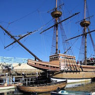
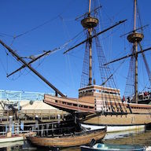

Popular Tourtists Attractions in Plymouth
 



Different tourtist attractions across Plymouth that show the history of the town. A slide with six images.
The Plimouth Plantaion in the summer and winter. Showing both winter and summer by using a rollover image.